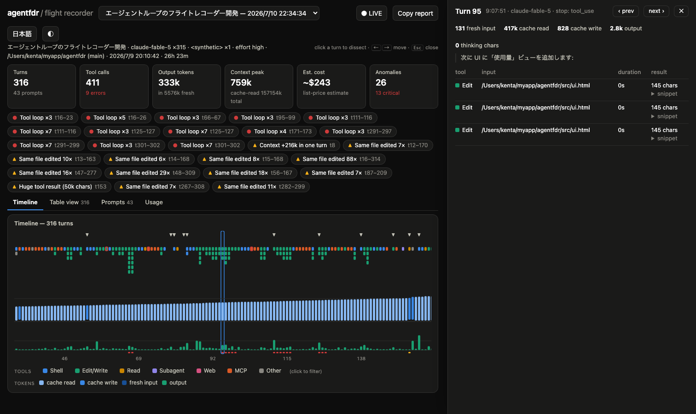
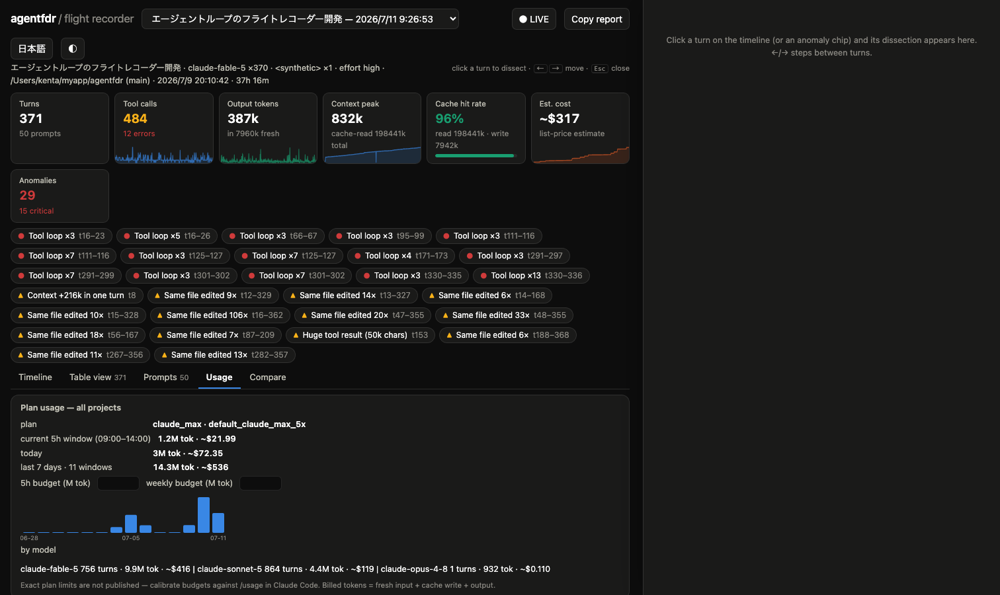

When Claude Code loops, drifts off-goal, or quietly burns two million tokens, agentfdr shows you why — turn by turn, after the fact.
Zero instrumentation · zero cloud · zero config — it reads the transcripts Claude Code already writes.

Autonomous agent failures are hard to debug — unless someone kept the flight recording.
Edit → test fails → same edit, for 40 minutes.
You asked for a bugfix; it refactored the router.
A huge tool result crowds the context, cache stops hitting, every turn re-reads 200k tokens.
“Done!” with failing tests — or no stop at all.
Working with agents is becoming loop engineering — designing and operating the loop your harness runs. You can't engineer a loop you can't see. agentfdr is the instrument panel.
The whole session on one screen: every turn's tool calls, context-window composition, and output tokens, with prompt and compaction markers.
Tool loops, error streaks, context bloat, token spikes, cache thrash, file churn, and refusals — flagged automatically, one click from the evidence.
A resizable side panel with the usage breakdown and every tool call's duration, result size, and snippet. Step through turns with ←/→.
agentfdr watch follows a session that's still running — watch the context climb in real time.
agentfdr assert --no-loops --max-tokens 2M exits 1 on violation. Put a tripwire on your autonomous pipelines.
agentfdr blame renders the whole analysis as markdown, ready to paste into an issue or a Slack thread.
agentfdr usage aggregates every project's transcripts into the same shape your subscription is metered in: the current 5-hour window, daily history, and the rolling week — with a per-model breakdown and estimated cost.
Your plan tier is auto-detected. Set budgets, calibrate them once against Claude Code's /usage screen, and get warning bars before you hit the wall.

agentfdr # open the newest session's timeline agentfdr list # all recorded sessions across projects agentfdr watch # live: follow the running session agentfdr blame 35cb18 # markdown autopsy for an issue agentfdr usage # plan burn: 5h window / daily / weekly agentfdr assert --no-loops --max-tokens 2M # CI gate